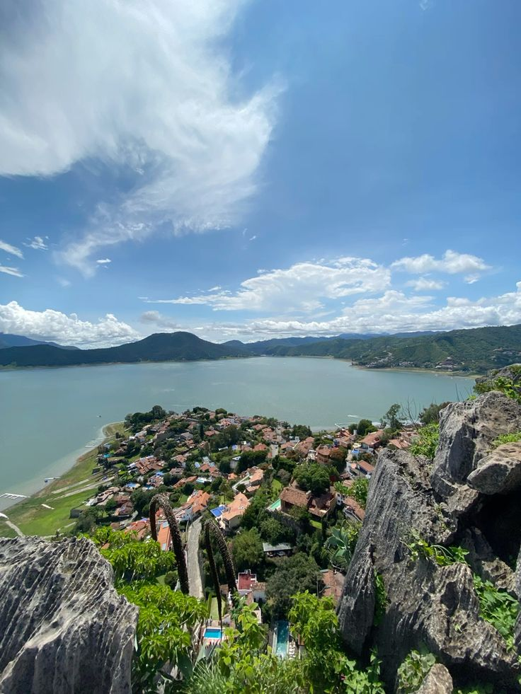
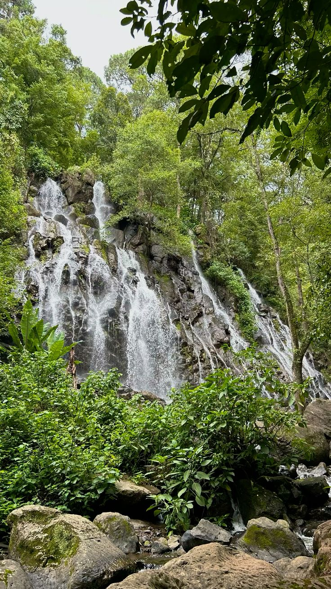
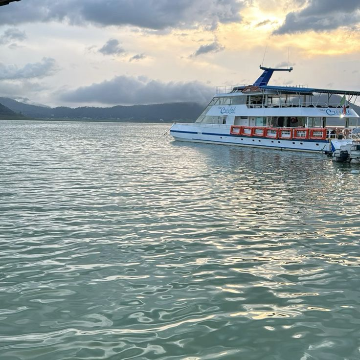

" Un destino donde la naturaleza se convierte en arte. "

"La Peña de Valle de Bravo es una impresionante formación rocosa ubicada en el Estado de México, reconocida por su belleza natural y sus increíbles vistas panorámicas. Desde lo alto se puede apreciar el hermoso lago, las montañas y gran parte del pueblo, creando un paisaje lleno de magia y tranquilidad.
Sus enormes rocas, su altura y su entorno natural la convierten en uno de los lugares más llamativos y visitados de la región. Lo más sorprendente es el contraste entre las rocas, el agua y el cielo, que ofrece una vista única e inolvidable. Además de ser un atractivo turístico, la Peña guarda parte de la historia de Valle de Bravo y permite disfrutar del aire libre, tomar fotografías y admirar una de las maravillas naturales más representativas del Estado de México.
La Peña también es un lugar que invita a vivir nuevas experiencias y conectar con la naturaleza. Su paisaje cambia con la luz del sol, creando hermosas vistas durante el día, mientras que el aire fresco y la tranquilidad del entorno hacen que cada visita sea especial. Es un sitio perfecto para quienes disfrutan de la aventura, la fotografía y los paisajes impresionantes. Sin duda, su belleza y grandeza hacen que sea uno de los rincones más emblemáticos de Valle de Bravo, un lugar que sorprende a sus visitantes y deja recuerdos inolvidables. "
"La cascada El Molino, ubicada en Valle de Bravo, Estado de México, es un atractivo natural que destaca por la belleza de su caída de agua y el ambiente tranquilo que la rodea. Es un lugar ideal para admirar los paisajes, escuchar el sonido del agua y disfrutar de un espacio alejado del ruido de la ciudad. Su encanto la convierte en un sitio especial para quienes buscan conectar con la naturaleza.
Uno de los aspectos más llamativos de la cascada es su vegetación abundante, formada por árboles, plantas, arbustos y distintas especies que crecen gracias a la humedad del ambiente y la disponibilidad de agua. El entorno verde brinda sombra, frescura y refugio para diversos animales, además de crear un paisaje lleno de vida y belleza natural.
La cascada El Molino es importante para el equilibrio del ecosistema, ya que el agua y la vegetación ayudan a mantener la humedad del suelo, protegerlo de la erosión y proporcionar hábitat a diferentes seres vivos. Por eso, es fundamental cuidar este lugar, evitar tirar basura y respetar las plantas y los animales para conservar su riqueza natural y permitir que las futuras generaciones también puedan disfrutar de ella.


"La laguna de Valle de Bravo es uno de los paisajes naturales más representativos del Estado de México. Está rodeada de montañas, árboles y áreas verdes que crean un ambiente tranquilo y lleno de belleza. Sus aguas destacan por el contraste con el paisaje boscoso, convirtiéndola en un lugar ideal para disfrutar de la naturaleza y admirar vistas impresionantes.
La vegetación que rodea la laguna está formada principalmente por árboles, arbustos, pastos y diversas plantas que crecen gracias a las condiciones del clima y la humedad de la región. En las zonas montañosas cercanas destacan los bosques de pino y encino, que dan color al paisaje y contribuyen a mantener el equilibrio natural. Esta vegetación también ayuda a conservar la humedad del suelo y protegerlo de la erosión.
La laguna de Valle de Bravo también es un lugar ideal para disfrutar de actividades acuáticas y contemplar hermosos atardeceres. Su combinación de agua, montañas y vegetación crea un paisaje único que atrae a visitantes durante todo el año. Además, conservar sus aguas limpias es fundamental para proteger la flora y la fauna de la región. "